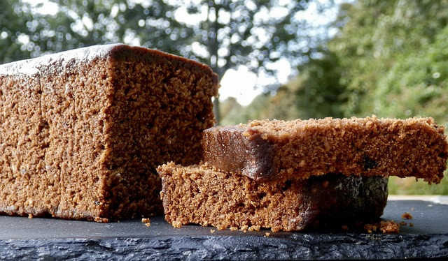

Yorkshire parkin recipe

Parkin the classic Yorkshire ginger cake.
Ingredients
- 225g/8oz self raising flour
- 110g/4oz caster sugar
- 1 tsp ground ginger
- 1 tsp bicarbonate of soda
- 1 egg
- 200ml/7fl oz milk
- 55g/2oz butter
- 110g/4oz golden syrup
Steps
- Preheat the oven to 150C/300F/Gas 2. Line a 22cm/8in tin.
- Sieve the flour, sugar, ginger and bicarbonate of soda into a large bowl.
- In a small pan gently heat the butter and syrup until melted.
- Beat the egg into the milk.
- Gradually pour the butter and syrup into the flour and stir. The mixture will be thick.
- Pour in the egg and milk and stir until smooth and pour into the lined tin.
- Bake for about an hour or until a skewer inserted into the centre of the cake comes out clean
Home